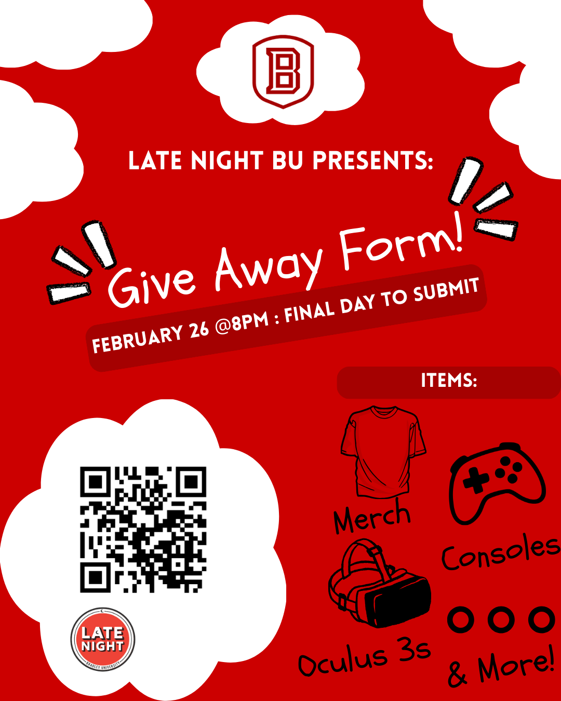

CS 491 Capstone Project — Spring 2026
A data-driven study analyzing how Bradley University students respond to simulated phishing attacks — and what we can all learn from it.
Our team designed and executed a controlled phishing campaign targeting Bradley University students to understand who is most vulnerable to social engineering attacks and why.
Phishing simulations at universities are often limited to reactive training. There is little understanding of why certain users fall victim or how to proactively predict and mitigate risk.
We deployed a realistic phishing campaign using GoPhish, disguised as a "Late Night BU Online Raffle," alongside physical QR code posters placed across campus.
Use statistical analysis and machine learning to identify demographic patterns in phishing susceptibility and build a predictive framework for future awareness campaigns.
Our campaign was launched on February 13, 2026 and ran through the weekend until detection on February 16.
Statistical analysis revealed significant demographic patterns in who fell for the phishing campaign.
Women were 1.64x more likely to submit information compared to men. The Chi-Square test confirmed a statistically significant association (p = 2.39 × 10-6).
| Gender | Clicked | Didn't Click | Total | Click Rate |
|---|---|---|---|---|
| Female | 262 | 1,684 | 1,946 | 13.46% |
| Male | 162 | 1,708 | 1,870 | 8.66% |
| Total | 424 | 3,392 | 3,816 | 11.11% |
Students in Arts & Media were dramatically overrepresented among those who fell for the phishing email (std. residual +8.14), while Health Sciences students were significantly underrepresented (-2.54).
Standardized residuals by area of study. Values beyond ±1.96 indicate statistically significant over/underrepresentation.
Younger students (under 24) were significantly overrepresented among respondents, while older students (25+) were underrepresented. This indicates an inverse relationship between age and phishing susceptibility.
| Age Group | University Total | Campaign Submissions | Std. Residual |
|---|---|---|---|
| Under 18-19 | 1,261 | 137 | +0.60 |
| 20-21 | 1,565 | 187 | +2.00 |
| 22-24 | 616 | 86 | +2.81 |
| 25-29 | 310 | 16 | -2.83 |
| 30-34 | 137 | 3 | -2.96 |
| 35-39 | 112 | 4 | -2.22 |
| 40-49 | 162 | 3 | -3.36 |
| 50-65+ | 79 | 2 | -2.16 |
Younger female student enrolled in an Arts & Media discipline
Older male student enrolled in Health Sciences
Our campaign proved that even tech-savvy university students can be fooled. Here's how to spot and avoid phishing attacks.
Always verify the sender's email address carefully. Phishing emails often use addresses that look similar to legitimate ones but have subtle differences (e.g., bradIey.edu vs bradley.edu).
Before clicking any link, hover over it to see the actual URL. If the destination doesn't match what you expect, or uses an unfamiliar domain, don't click it.
Phishing emails create a false sense of urgency — deadlines, limited-time offers, or threats. Our campaign used a fake raffle with a deadline to pressure quick action.
Legitimate organizations will never ask for sensitive information like your student ID, password, or SSN through email or an unfamiliar form.
If an email claims to be from your university, go directly to the official website or call the office. Don't rely on links or phone numbers in the email itself.
Our phishing email promised free consoles and merch. If an offer seems too good to be true, it probably is. Verify giveaways through official university social media.
Phishing isn't just email. Our campaign used physical QR code posters on campus. Always check where a QR code leads before entering any information.
If you receive a suspicious email, report it to your university's IT security office. At Bradley, contact the Office of Information Security. Reporting helps protect everyone.

This poster was physically placed across 12 campus locations including all major academic buildings. It featured a QR code that directed students to the same fraudulent giveaway form used in the email campaign.
The flyer mimicked legitimate Bradley University branding and used the real "Late Night BU" event name to build trust and credibility.
Here are the warning signs that were present in the "Late Night BU Online Raffle" email we sent:
GoPhish server deployed on Bradley's network with DKIM authentication configured.
4,803 phishing emails sent and QR code posters placed across 12 campus locations.
436 students submitted personal information through the fake giveaway form. 80% of all emails were opened.
A graduate student contacted Student Activities about the raffle, triggering internal escalation to university police.
Office of Information Security sent a warning to all students. Team disclosed the authorized security assessment. Situation resolved within ~72 hours.
Bradley University — College of Liberal Arts & Sciences
Computer Science & Information Systems Department